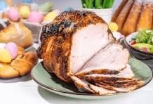

Glazed Ham

Description
Glazed ham is a ham that has been topped with a thick, pourable glaze before baking. The glaze enhances the flavor, keeps the ham moist, and gives it a glossy appearance. Glazed ham is a classic holiday centerpiece, often served with mashed potatoes and glazed carrots.
Ingredients
- 1 (10 pound) fully-cooked, bone-in ham
- 1 ¼ cups packed dark brown sugar
- ⅓ cup pineapple juice
- ⅓ cup honey, or more to taste
Steps
-
- Preheat the oven to 325 degrees F (165 degrees C). Place ham on a rack set in a roasting pan.
- Bake uncovered in the preheated oven for 2 hours.
- While the ham is baking, combine brown sugar, pineapple juice, and 1/3 cup honey in a saucepan. Zest orange into the saucepan, then squeeze in the juice. Add Dijon mustard and ground cloves; whisk mixture over medium-high heat as it comes to a boil. Reduce heat and simmer until glaze thickens slightly, 5 to 10 minutes.
- Taste glaze and adjust seasonings. Add lemon juice for more tang, or honey to make it sweeter. Set aside.